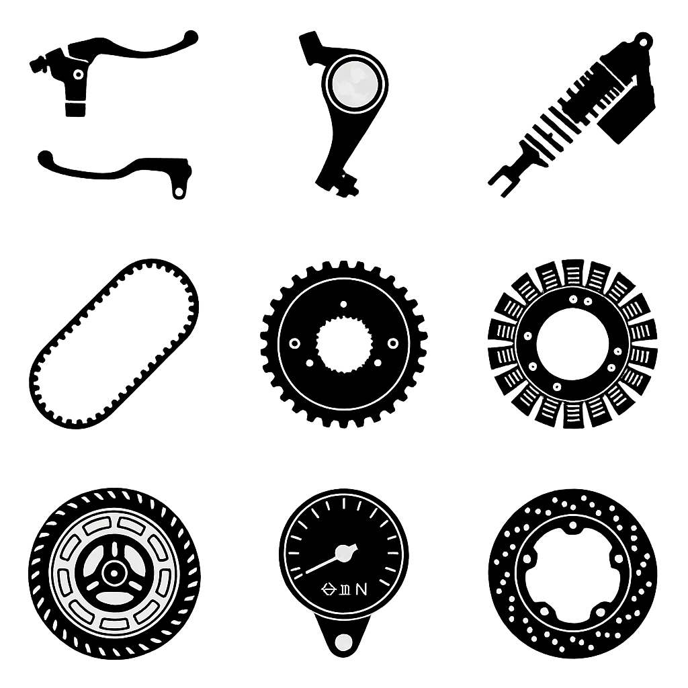
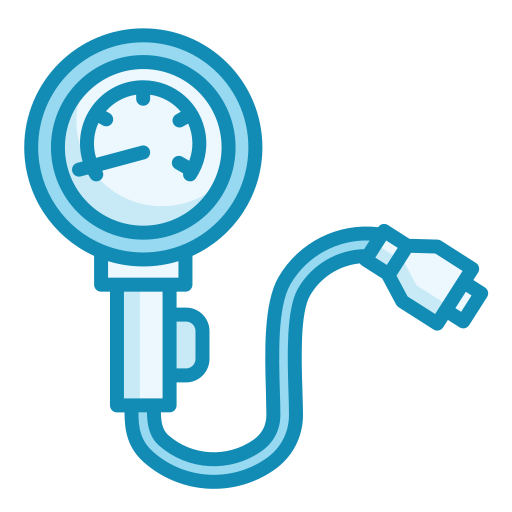
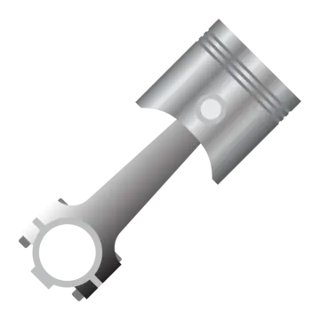
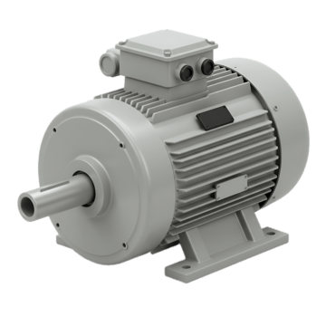

Cilindraje
El cilindraje indica el tamaño del motor y se mide en centímetros cúbicos (cc). Es uno de los factores más determinantes del rendimiento. Una moto de bajo cilindraje suele ser más económica y fácil de manejar, ideal para ciudad. En cambio, una de alto cilindraje ofrece mayor potencia y velocidad, pero también mayor consumo y exige más experiencia. Elegir el cilindraje correcto depende de tu uso diario y tu nivel como conductor.

aqui una lista de modelos que puden ser de utilidad
- 149.0 ccm (9.09 cubic inches)
- 330.0 ccm (20.14 cubic inches)
- 124.1 ccm (7.57 cubic inches)
- 109.1 ccm (6.66 cubic inches)
- 123.7 ccm (7.55 cubic inches)
- 1084.0 ccm (66.15 cubic inches)
- 150.0 ccm (9.15 cubic inches)
- 108.0 ccm (6.59 cubic inches)
- 998.0 ccm (60.90 cubic inches)
- 123.9 ccm (7.56 cubic inches)
- 124.9 ccm (7.62 cubic inches)
- 124.0 ccm (7.57 cubic inches)
- 149.2 ccm (9.10 cubic inches)
- 184.0 ccm (11.23 cubic inches)
- 286.0 ccm (17.45 cubic inches)
- 348.0 ccm (21.23 cubic inches)
- 471.0 ccm (28.74 cubic inches)
- 649.0 ccm (39.60 cubic inches)
- 999.0 ccm (60.96 cubic inches)
- 599.0 ccm (36.55 cubic inches)
- 196.0 ccm (11.96 cubic inches)
- 155.0 ccm (9.46 cubic inches)
- 942.0 ccm (57.48 cubic inches)
- 110.0 ccm (6.71 cubic inches)
- 125.0 ccm (7.63 cubic inches)
- 1298.0 ccm (79.20 cubic inches)
- 249.0 ccm (15.19 cubic inches)
- 90.0 ccm (5.49 cubic inches)
- 686.0 ccm (41.86 cubic inches)
- 421.0 ccm (25.69 cubic inches)
- 321.0 ccm (19.59 cubic inches)
- 689.0 ccm (42.04 cubic inches)
- 890.0 ccm (54.31 cubic inches)
- 124.7 ccm (7.61 cubic inches)
- 271.0 ccm (16.54 cubic inches)
- 749.0 ccm (45.70 cubic inches)
- 1352.0 ccm (82.50 cubic inches)
- 49.5 ccm (3.02 cubic inches)
- 651.0 ccm (39.72 cubic inches)
- 112.0 ccm (6.83 cubic inches)
- 144.0 ccm (8.79 cubic inches)
- 233.0 ccm (14.22 cubic inches)
- 292.0 ccm (17.82 cubic inches)
- 449.0 ccm (27.40 cubic inches)
- 99.0 ccm (6.04 cubic inches)
- 64.7 ccm (3.95 cubic inches)
- 84.0 ccm (5.13 cubic inches)
- 1043.0 ccm (63.64 cubic inches)
- 113.0 ccm (6.90 cubic inches)
- 805.0 ccm (49.12 cubic inches)
- 1462.0 ccm (89.21 cubic inches)
- 1783.0 ccm (108.80 cubic inches)
- 652.0 ccm (39.79 cubic inches)
- 200.0 ccm (12.20 cubic inches)
- 399.0 ccm (24.35 cubic inches)
- 644.0 ccm (39.30 cubic inches)
- 398.0 ccm (24.29 cubic inches)
- 49.0 ccm (2.99 cubic inches)
- 199.0 ccm (12.14 cubic inches)
- 999.8 ccm (61.01 cubic inches)
- 350.0 ccm (21.36 cubic inches)
- 1649.0 ccm (100.62 cubic inches)
- 853.0 ccm (52.05 cubic inches)
- 895.0 ccm (54.61 cubic inches)
- 313.0 ccm (19.10 cubic inches)
- 1254.0 ccm (76.52 cubic inches)
- 1802.0 ccm (109.96 cubic inches)
- 1170.0 ccm (71.39 cubic inches)
- 937.0 ccm (57.18 cubic inches)
- 1262.0 ccm (77.01 cubic inches)
- 1158.0 ccm (70.66 cubic inches)
- 955.0 ccm (58.27 cubic inches)
- 1103.0 ccm (67.31 cubic inches)
- 1079.0 ccm (65.84 cubic inches)
- 803.0 ccm (49.00 cubic inches)
- 124.8 ccm (7.62 cubic inches)
- 1301.0 ccm (79.39 cubic inches)
- 143.7 ccm (8.77 cubic inches)
- 249.9 ccm (15.25 cubic inches)
- 293.2 ccm (17.89 cubic inches)
- 293.0 ccm (17.88 cubic inches)
- 349.7 ccm (21.34 cubic inches)
- 449.9 ccm (27.45 cubic inches)
- 449.3 ccm (27.42 cubic inches)
- 1200.0 ccm (73.22 cubic inches)
- 900.0 ccm (54.92 cubic inches)
- 765.0 ccm (46.68 cubic inches)
- 2458.0 ccm (149.99 cubic inches)
- 1160.0 ccm (70.78 cubic inches)
- 896.1 ccm (54.68 cubic inches)
- 124.2 ccm (7.58 cubic inches)
- 659.0 ccm (40.21 cubic inches)
- 1099.0 ccm (67.06 cubic inches)
- 50.0 ccm (3.05 cubic inches)
- 124.5 ccm (7.60 cubic inches)
- 174.0 ccm (10.62 cubic inches)
- 49.4 ccm (3.01 cubic inches)
- 660.0 ccm (40.27 cubic inches)
- 1077.0 ccm (65.72 cubic inches)
- 1746.0 ccm (106.54 cubic inches)
- 1868.0 ccm (113.99 cubic inches)
- 1202.0 ccm (73.35 cubic inches)
- 1868.2 ccm (114.00 cubic inches)
- 883.0 ccm (53.88 cubic inches)
- 1250.4 ccm (76.30 cubic inches)
- 1753.5 ccm (107.00 cubic inches)
- 1252.1 ccm (76.40 cubic inches)
- 1923.0 ccm (117.34 cubic inches)
- 1917.4 ccm (117.00 cubic inches)
- 1768.0 ccm (107.88 cubic inches)
- 1811.0 ccm (110.51 cubic inches)
- 1890.0 ccm (115.33 cubic inches)
- 1819.1 ccm (111.00 cubic inches)
- 1203.0 ccm (73.41 cubic inches)
- 1133.0 ccm (69.14 cubic inches)
- 1769.9 ccm (108.00 cubic inches)
- 798.0 ccm (48.69 cubic inches)
- 554.0 ccm (33.81 cubic inches)
- 931.0 ccm (56.81 cubic inches)
- 500.0 ccm (30.51 cubic inches)
- 754.0 ccm (46.01 cubic inches)
- 373.5 ccm (22.79 cubic inches)
- 499.6 ccm (30.49 cubic inches)
- 197.0 ccm (12.02 cubic inches)
- 300.0 ccm (18.31 cubic inches)
- 150.1 ccm (9.16 cubic inches)
- 249.8 ccm (15.24 cubic inches)
- 510.9 ccm (31.18 cubic inches)
- 510.4 ccm (31.14 cubic inches)
- 64.9 ccm (3.96 cubic inches)
- 84.9 ccm (5.18 cubic inches)
- 692.7 ccm (42.27 cubic inches)
- 1042.0 ccm (63.58 cubic inches)
- 850.0 ccm (51.87 cubic inches)
- 1380.0 ccm (84.21 cubic inches)
- 744.0 ccm (45.40 cubic inches)
- 220.0 ccm (13.42 cubic inches)
- 160.0 ccm (9.76 cubic inches)
- 102.0 ccm (6.22 cubic inches)
- 115.5 ccm (7.04 cubic inches)
- 248.8 ccm (15.18 cubic inches)
- 373.3 ccm (22.78 cubic inches)
- 149.5 ccm (9.12 cubic inches)
- 178.6 ccm (10.90 cubic inches)
- 249.7 ccm (15.24 cubic inches)
- 160.3 ccm (9.78 cubic inches)
- 199.5 ccm (12.17 cubic inches)
- 312.2 ccm (19.05 cubic inches)
- 159.7 ccm (9.74 cubic inches)
- 164.9 ccm (10.06 cubic inches)
- 177.4 ccm (10.82 cubic inches)
- 197.8 ccm (12.07 cubic inches)
- 109.7 ccm (6.69 cubic inches)
- 87.8 ccm (5.36 cubic inches)
- 99.7 ccm (6.08 cubic inches)
- 1570.0 ccm (95.80 cubic inches)
- 1518.0 ccm (92.63 cubic inches)
- 1337.0 ccm (81.58 cubic inches)
- 1311.1 ccm (80.00 cubic inches)
- 1524.1 ccm (93.00 cubic inches)
- 1450.0 ccm (88.48 cubic inches)
Motor
Este apartado describe la configuración del motor: número de cilindros, disposición y tecnología. Esto influye en cosas como la suavidad, la vibración, el sonido y la respuesta al acelerar. Por ejemplo, un motor monocilíndrico suele ser más económico y sencillo, pero vibra más; mientras que uno de varios cilindros es más suave y potente. Es importante porque define la “personalidad” de la moto.
aqui una lista de modelos que puden ser de utilidad
- Single cylinder, four-stroke
- V2, four-stroke
- Twin, four-stroke
- In-line four, four-stroke
- In-line three, four-stroke
- Single cylinder, two-stroke
- Electric
- In-line six, four-stroke
- Two cylinder boxer, four-stroke
- V4, four-stroke
Compresión
La relación de compresión mide cuánto se comprime la mezcla de aire y combustible dentro del motor antes de la explosión. Una compresión alta suele traducirse en mejor rendimiento y eficiencia, pero también puede requerir gasolina de mayor calidad. Es un factor técnico, pero clave para entender el equilibrio entre potencia, consumo y cuidado del motor.

aqui una lista de modelos que puden ser de utilidad
- 10.6:1
- 10.5:1
- 9.4:1
- 10.0:1
- 10.1:1
- 9.5:1
- 11.6:1
- 11.3:1
- 9.0:1
- 10.7:1
- 13.4:1
- 12.2:1
- 9.3:1
- 10.2:1
- 10.8:1
- 9.8:1
- 9.6:1
- 9.2:1
- 11.2:1
- 11.5:1
- 12.0:1
- 11.0:1
- 11.1:1
- 12.5:1
- 14.1:1
- 8.4:1
- 10.9:1
- 11.8:1
- 11.7:1
- 9.7:1
- 13.2:1
- 12.7:1
- 13.1:1
- 13.5:1
- 13.3:1
- 13.0:1
- 12.6:1
- 14.0:1
- 12.9:1
- 12.1:1
- 13.6:1
- 12.3:1
- 8.5:1
- 12.8:1
- 9.9:1
- 8.2:1
Diámetro x carrera
Son las dimensiones internas del cilindro. Esto determina si el motor está diseñado para girar a altas revoluciones (más velocidad) o para generar más fuerza (mejor respuesta). Aunque es un dato técnico, ayuda a entender si la moto será más “rápida” o más “fuerte”.
aqui una lista de modelos que puden ser de utilidad
- 57.3 x 57.9 mm (2.3 x 2.3 inches)
- 77.0 x 70.8 mm (3.0 x 2.8 inches)
- 44.0 x 41.0 mm (1.7 x 1.6 inches)
- 47.0 x 63.1 mm (1.9 x 2.5 inches)
- 50.0 x 63.1 mm (2.0 x 2.5 inches)
- 92.0 x 81.5 mm (3.6 x 3.2 inches)
- 50.0 x 55.0 mm (2.0 x 2.2 inches)
- 76.0 x 56.5 mm (3.0 x 2.2 inches)
- 75.0 x 56.5 mm (3.0 x 2.2 inches)
- 57.3 x 48.4 mm (2.3 x 1.9 inches)
- 56.5 x 49.5 mm (2.2 x 1.9 inches)
- 9.1 x 57.8 mm (0.4 x 2.3 inches)
- 61.0 x 63.0 mm (2.4 x 2.5 inches)
- 76.0 x 63.0 mm (3.0 x 2.5 inches)
- 70.0 x 90.5 mm (2.8 x 3.6 inches)
- 67.0 x 66.8 mm (2.6 x 2.6 inches)
- 67.0 x 46.0 mm (2.6 x 1.8 inches)
- 76.0 x 55.0 mm (3.0 x 2.2 inches)
- 81.0 x 48.5 mm (3.2 x 1.9 inches)
- 67.0 x 42.5 mm (2.6 x 1.7 inches)
- 54.0 x 54.0 mm (2.1 x 2.1 inches)
- 67.0 x 55.7 mm (2.6 x 2.2 inches)
- 58.0 x 58.7 mm (2.3 x 2.3 inches)
- 85.0 x 83.0 mm (3.3 x 3.3 inches)
- 51.0 x 54.0 mm (2.0 x 2.1 inches)
- 52.4 x 57.9 mm (2.1 x 2.3 inches)
- 79.0 x 66.2 mm (3.1 x 2.6 inches)
- 74.0 x 58.0 mm (2.9 x 2.3 inches)
- 52.0 x 57.9 mm (2.0 x 2.3 inches)
- 47.0 x 51.8 mm (1.9 x 2.0 inches)
- 102.0 x 84.0 mm (4.0 x 3.3 inches)
- 84.5 x 75.0 mm (3.3 x 3.0 inches)
- 68.0 x 44.1 mm (2.7 x 1.7 inches)
- 80.0 x 68.6 mm (3.1 x 2.7 inches)
- 78.0 x 62.1 mm (3.1 x 2.4 inches)
- 79.0 x 50.9 mm (3.1 x 2.0 inches)
- 52.0 x 58.6 mm (2.0 x 2.3 inches)
- 72.7 x 65.2 mm (2.9 x 2.6 inches)
- 85.0 x 66.0 mm (3.3 x 2.6 inches)
- 84.0 x 61.0 mm (3.3 x 2.4 inches)
- 39.0 x 41.4 mm (1.5 x 1.6 inches)
- 100.0 x 83.0 mm (3.9 x 3.3 inches)
- 53.0 x 50.6 mm (2.1 x 2.0 inches)
- 58.0 x 54.4 mm (2.3 x 2.1 inches)
- 67.0 x 66.0 mm (2.6 x 2.6 inches)
- 78.0 x 61.2 mm (3.1 x 2.4 inches)
- 96.0 x 62.0 mm (3.8 x 2.4 inches)
- 52.5 x 45.8 mm (2.1 x 1.8 inches)
- 78.0 x 52.2 mm (3.1 x 2.1 inches)
- 44.5 x 41.6 mm (1.8 x 1.6 inches)
- 48.5 x 45.8 mm (1.9 x 1.8 inches)
- 83.0 x 60.0 mm (3.3 x 2.4 inches)
- 77.0 x 56.0 mm (3.0 x 2.2 inches)
- 58.0 x 47.2 mm (2.3 x 1.9 inches)
- 51.0 x 55.2 mm (2.0 x 2.2 inches)
- 52.5 x 57.4 mm (2.1 x 2.3 inches)
- 53.5 x 55.2 mm (2.1 x 2.2 inches)
- 83.0 x 74.4 mm (3.3 x 2.9 inches)
- 96.0 x 101.0 mm (3.8 x 4.0 inches)
- 112.0 x 90.5 mm (4.4 x 3.6 inches)
- 94.0 x 94.0 mm (3.7 x 3.7 inches)
- 69.0 x 53.4 mm (2.7 x 2.1 inches)
- 81.0 x 77.6 mm (3.2 x 3.1 inches)
- 100.0 x 82.0 mm (3.9 x 3.2 inches)
- 57.0 x 48.8 mm (2.2 x 1.9 inches)
- 90.0 x 62.6 mm (3.5 x 2.5 inches)
- 39.0 x 41.8 mm (1.5 x 1.6 inches)
- 66.0 x 58.2 mm (2.6 x 2.3 inches)
- 76.0 x 55.1 mm (3.0 x 2.2 inches)
- 80.0 x 69.6 mm (3.1 x 2.7 inches)
- 72.0 x 67.5 mm (2.8 x 2.7 inches)
- 84.0 x 77.0 mm (3.3 x 3.0 inches)
- 86.0 x 77.0 mm (3.4 x 3.0 inches)
- 80.0 x 62.1 mm (3.1 x 2.4 inches)
- 80.0 x 49.7 mm (3.1 x 2.0 inches)
- 102.5 x 76.0 mm (4.0 x 3.0 inches)
- 102.0 x 76.0 mm (4.0 x 3.0 inches)
- 107.1 x 100.0 mm (4.2 x 3.9 inches)
- 101.0 x 73.0 mm (4.0 x 2.9 inches)
- 94.0 x 67.5 mm (3.7 x 2.7 inches)
- 106.0 x 71.5 mm (4.2 x 2.8 inches)
- 83.0 x 53.5 mm (3.3 x 2.1 inches)
- 100.0 x 60.8 mm (3.9 x 2.4 inches)
- 81.0 x 53.5 mm (3.2 x 2.1 inches)
- 98.0 x 71.0 mm (3.9 x 2.8 inches)
- 88.0 x 66.0 mm (3.5 x 2.6 inches)
- 104.0 x 64.7 mm (4.1 x 2.5 inches)
- 54.0 x 54.5 mm (2.1 x 2.1 inches)
- 108.0 x 71.0 mm (4.3 x 2.8 inches)
- 58.0 x 54.5 mm (2.3 x 2.1 inches)
- 66.4 x 72.0 mm (2.6 x 2.8 inches)
- 78.0 x 52.3 mm (3.1 x 2.1 inches)
- 72.0 x 72.0 mm (2.8 x 2.8 inches)
- 88.0 x 57.5 mm (3.5 x 2.3 inches)
- 95.0 x 63.4 mm (3.7 x 2.5 inches)
- 97.6 x 80.0 mm (3.8 x 3.1 inches)
- 84.6 x 80.0 mm (3.3 x 3.1 inches)
- 78.0 x 53.4 mm (3.1 x 2.1 inches)
- 110.2 x 85.9 mm (4.3 x 3.4 inches)
- 90.0 x 60.8 mm (3.5 x 2.4 inches)
- 92.0 x 67.4 mm (3.6 x 2.7 inches)
- 58.0 x 47.0 mm (2.3 x 1.9 inches)
- 81.0 x 63.9 mm (3.2 x 2.5 inches)
- 85.0 x 52.3 mm (3.3 x 2.1 inches)
- 39.9 x 40.0 mm (1.6 x 1.6 inches)
- 61.5 x 58.7 mm (2.4 x 2.3 inches)
- 40.0 x 39.3 mm (1.6 x 1.5 inches)
- 39.0 x 41.3 mm (1.5 x 1.6 inches)
- 81.0 x 52.3 mm (3.2 x 2.1 inches)
- 100.0 x 111.0 mm (3.9 x 4.4 inches)
- 102.0 x 114.0 mm (4.0 x 4.5 inches)
- 88.9 x 96.8 mm (3.5 x 3.8 inches)
- 102.0 x 114.3 mm (4.0 x 4.5 inches)
- 102.0 x 116.8 mm (4.0 x 4.6 inches)
- 76.2 x 96.8 mm (3.0 x 3.8 inches)
- 104.9 x 72.4 mm (4.1 x 2.9 inches)
- 100.0 x 111.1 mm (3.9 x 4.4 inches)
- 105.0 x 72.3 mm (4.1 x 2.8 inches)
- 99.8 x 111.1 mm (3.9 x 4.4 inches)
- 103.5 x 114.3 mm (4.1 x 4.5 inches)
- 103.5 x 114.0 mm (4.1 x 4.5 inches)
- 108.0 x 96.5 mm (4.3 x 3.8 inches)
- 101.0 x 113.0 mm (4.0 x 4.4 inches)
- 103.2 x 113.0 mm (4.1 x 4.4 inches)
- 102.0 x 73.6 mm (4.0 x 2.9 inches)
- 99.0 x 73.6 mm (3.9 x 2.9 inches)
- 93.0 x 73.6 mm (3.7 x 2.9 inches)
- 103.0 x 113.0 mm (4.1 x 4.4 inches)
- 79.0 x 54.3 mm (3.1 x 2.1 inches)
- 70.5 x 71.0 mm (2.8 x 2.8 inches)
- 81.0 x 60.2 mm (3.2 x 2.4 inches)
- 70.0 x 54.3 mm (2.8 x 2.1 inches)
- 69.0 x 66.8 mm (2.7 x 2.6 inches)
- 88.0 x 62.0 mm (3.5 x 2.4 inches)
- 72.7 x 90.0 mm (2.9 x 3.5 inches)
- 72.0 x 61.2 mm (2.8 x 2.4 inches)
- 65.0 x 45.2 mm (2.6 x 1.8 inches)
- 57.5 x 57.8 mm (2.3 x 2.3 inches)
- 95.0 x 72.0 mm (3.7 x 2.8 inches)
- 39.5 x 40.0 mm (1.6 x 1.6 inches)
- 45.0 x 40.8 mm (1.8 x 1.6 inches)
- 47.0 x 49.0 mm (1.9 x 1.9 inches)
- 105.0 x 80.0 mm (4.1 x 3.1 inches)
- 104.0 x 81.2 mm (4.1 x 3.2 inches)
- 80.0 x 74.0 mm (3.1 x 2.9 inches)
- 47.0 x 58.8 mm (1.9 x 2.3 inches)
- 50.0 x 58.8 mm (2.0 x 2.3 inches)
- 62.0 x 52.9 mm (2.4 x 2.1 inches)
- 62.5 x 57.8 mm (2.5 x 2.3 inches)
- 66.0 x 57.8 mm (2.6 x 2.3 inches)
- 53.5 x 48.8 mm (2.1 x 1.9 inches)
- 53.5 x 55.5 mm (2.1 x 2.2 inches)
- 51.0 x 43.0 mm (2.0 x 1.7 inches)
- 51.0 x 48.8 mm (2.0 x 1.9 inches)
- 53.5 x 53.5 mm (2.1 x 2.1 inches)
- 57.0 x 57.8 mm (2.2 x 2.3 inches)
- 92.0 x 114.3 mm (3.6 x 4.5 inches)
- 88.8 x 108.0 mm (3.5 x 4.3 inches)
- 92.2 x 117.6 mm (3.6 x 4.6 inches)
- 92.2 x 114.3 mm (3.6 x 4.5 inches)
- 93.5 x 101.6 mm (3.7 x 4.0 inches)
Válvulas por cilindro
Las válvulas controlan la entrada de aire y la salida de gases. Un mayor número de válvulas permite una mejor respiración del motor, lo que mejora el rendimiento y la eficiencia. Es un indicador de tecnología y optimización.

aqui una lista de modelos que puden ser de utilidad
- 2
- 4
- 3
Potencia
La potencia, generalmente medida en caballos de fuerza, indica qué tan rápido puede ir la moto. Es importante para adelantamientos, velocidad máxima y desempeño en carretera. Sin embargo, no lo es todo: una moto muy potente puede ser difícil de controlar si no se tiene experiencia.
aqui una lista de modelos que puden ser de utilidad
- 28.8 HP (21.0 kW) @ 7500 RPM
- 8.5 HP (6.2 kW) @ 6500 RPM
- 7.7 HP (5.6 kW) @ 8000 RPM
- 8.2 HP (6.0 kW) @ 6500 RPM
- 101.0 HP (73.7 kW) @ 7500 RPM
- 7.8 HP (5.7 kW) @ 7000 RPM
- 143.5 HP (104.7 kW) @ 10500 RPM
- 10.7 HP (7.8 kW) @ 7500 RPM
- 14.8 HP (10.8 kW) @ 10000 RPM
- 17.0 HP (12.4 kW) @ 8500 RPM
- 34.9 HP (25.5 kW) @ 10500 RPM
- 38.9 HP (28.4 kW) @ 9000 RPM
- 20.8 HP (15.2 kW) @ 5500 RPM
- 46.9 HP (34.3 kW) @ 8600 RPM
- 93.9 HP (68.5 kW) @ 12000 RPM
- 215.0 HP (156.9 kW) @ 14500 RPM
- 214.6 HP (156.6 kW) @ 14500 RPM
- 118.0 HP (86.1 kW) @ 13500 RPM
- 14.8 HP (10.8 kW) @ 8000 RPM
- 6.8 HP (5.0 kW) @ 8000 RPM
- 8.3 HP (6.1 kW) @ 7000 RPM
- 144.2 HP (105.2 kW) @ 8000 RPM
- 146.2 HP (106.7 kW) @ 8000 RPM
- 20.8 HP (15.2 kW) @ 8000 RPM
- 12.4 HP (9.1 kW) @ 7250 RPM
- 13.0 HP (9.5 kW) @ 8000 RPM
- 42.0 HP (30.7 kW) @ 10750 RPM
- 74.0 HP (54.0 kW) @ 9000 RPM
- 165.9 HP (121.1 kW) @ 11500 RPM
- 164.0 HP (119.7 kW) @ 11500 RPM
- 21.5 HP (15.7 kW) @ 7500 RPM
- 155.0 HP (113.1 kW) @ 5500 RPM
- 7.2 HP (5.3 kW) @ 7500 RPM
- 52.3 HP (38.2 kW) @ 8000 RPM
- 200.0 HP (146.0 kW) @ 13000 RPM
- 142.0 HP (103.6 kW) @ 10000 RPM
- 15.0 HP (10.9 kW) @ 10000 RPM
- 11.0 HP (8.0 kW) @ 8000 RPM
- 8.7 HP (6.4 kW) @ 6750 RPM
- 9.4 HP (6.8 kW) @ 8000 RPM
- 53.0 HP (38.7 kW) @ 6000 RPM
- 58.0 HP (42.3 kW) @ 4800 RPM
- 125.0 HP (91.2 kW) @ 6200 RPM
- 79.0 HP (57.7 kW) @ 4800 RPM
- 198.5 HP (144.9 kW) @ 13200 RPM
- 185.0 HP (135.0 kW) @ 11500 RPM
- 34.0 HP (24.8 kW) @ 7500 RPM
- 42.0 HP (30.7 kW) @ 4900 RPM
- 158.2 HP (115.5 kW) @ 7750 RPM
- 77.0 HP (56.2 kW) @ 7500 RPM
- 90.0 HP (65.7 kW) @ 8000 RPM
- 99.0 HP (72.3 kW) @ 8500 RPM
- 34.0 HP (24.8 kW) @ 9250 RPM
- 34.0 HP (24.8 kW) @ 9500 RPM
- 160.0 HP (116.8 kW) @ 6750 RPM
- 205.0 HP (149.6 kW) @ 13000 RPM
- 136.0 HP (99.3 kW) @ 7750 RPM
- 91.0 HP (66.4 kW) @ 4750 RPM
- 109.0 HP (79.6 kW) @ 7250 RPM
- 110.0 HP (80.3 kW) @ 9250 RPM
- 162.0 HP (118.2 kW) @ 9500 RPM
- 114.0 HP (83.2 kW) @ 9000 RPM
- 93.0 HP (67.9 kW) @ 9000 RPM
- 170.0 HP (124.1 kW) @ 10500 RPM
- 152.9 HP (111.6 kW) @ 10750 RPM
- 215.5 HP (157.3 kW) @ 13000 RPM
- 86.0 HP (62.8 kW) @ 7500 RPM
- 73.0 HP (53.3 kW) @ 8250 RPM
- 208.0 HP (151.8 kW) @ 12750 RPM
- 111.0 HP (81.0 kW) @ 9250 RPM
- 15.0 HP (10.9 kW)
- 172.6 HP (126.0 kW)
- 45.0 HP (32.8 kW)
- 76.9 HP (56.1 kW) @ 6100 RPM
- 77.0 HP (56.2 kW) @ 6100 RPM
- 64.1 HP (46.8 kW) @ 7400 RPM
- 79.1 HP (57.8 kW) @ 6550 RPM
- 128.0 HP (93.4 kW) @ 12500 RPM
- 165.0 HP (120.4 kW) @ 6000 RPM
- 89.0 HP (65.0 kW) @ 7400 RPM
- 89.0 HP (65.0 kW) @ 7250 RPM
- 180.0 HP (131.4 kW) @ 10750 RPM
- 98.6 HP (72.0 kW) @ 7250 RPM
- 65.0 HP (47.4 kW) @ 7250 RPM
- 116.0 HP (84.7 kW) @ 12000 RPM
- 121.0 HP (88.3 kW) @ 11750 RPM
- 65.0 HP (47.4 kW) @ 7500 RPM
- 64.1 HP (46.8 kW) @ 7500 RPM
- 95.2 HP (69.5 kW) @ 8750 RPM
- 15.0 HP (10.9 kW) @ 10500 RPM
- 100.0 HP (73.0 kW) @ 10500 RPM
- 46.9 HP (34.3 kW) @ 6000 RPM
- 217.0 HP (158.4 kW) @ 13000 RPM
- 217.0 HP (158.4 kW) @ 13200 RPM
- 14.8 HP (10.8 kW) @ 8700 RPM
- 17.4 HP (12.7 kW) @ 8500 RPM
- 3.2 HP (2.3 kW) @ 7000 RPM
- 3.0 HP (2.2 kW) @ 7000 RPM
- 95.0 HP (69.3 kW) @ 8750 RPM
- 46.9 HP (34.3 kW) @ 8000 RPM
- 80.0 HP (58.4 kW) @ 9250 RPM
- 95.0 HP (69.3 kW) @ 10500 RPM
- 175.0 HP (127.7 kW) @ 11350 RPM
- 175.0 HP (127.7 kW) @ 11300 RPM
- 28.2 HP (20.6 kW)
- 90.0 HP (65.7 kW) @ 5450 RPM
- 94.0 HP (68.6 kW) @ 5020 RPM
- 100.0 HP (73.0 kW) @ 5020 RPM
- 65.0 HP (47.4 kW) @ 6000 RPM
- 51.0 HP (37.2 kW) @ 6000 RPM
- 150.0 HP (109.5 kW) @ 9000 RPM
- 89.0 HP (65.0 kW) @ 5450 RPM
- 100.0 HP (73.0 kW) @ 5000 RPM
- 121.0 HP (88.3 kW) @ 7500 RPM
- 93.0 HP (67.9 kW) @ 5020 RPM
- 105.0 HP (76.6 kW) @ 5250 RPM
- 105.0 HP (76.6 kW) @ 5000 RPM
- 122.0 HP (89.1 kW)
- 92.0 HP (67.2 kW)
- 123.0 HP (89.8 kW)
- 120.0 HP (87.6 kW)
- 100.0 HP (73.0 kW)
- 78.0 HP (56.9 kW)
- 208.0 HP (151.8 kW) @ 13000 RPM
- 215.0 HP (156.9 kW) @ 13200 RPM
- 140.0 HP (102.2 kW) @ 12300 RPM
- 112.0 HP (81.8 kW) @ 11000 RPM
- 147.0 HP (107.3 kW) @ 13000 RPM
- 46.9 HP (34.3 kW) @ 7500 RPM
- 121.4 HP (88.6 kW) @ 10000 RPM
- 152.0 HP (110.9 kW) @ 13250 RPM
- 148.0 HP (108.0 kW) @ 13000 RPM
- 110.0 HP (80.3 kW) @ 10150 RPM
- 212.0 HP (154.7 kW) @ 13600 RPM
- 110.0 HP (80.3 kW) @ 11500 RPM
- 47.6 HP (34.7 kW) @ 8500 RPM
- 75.1 HP (54.8 kW) @ 8500 RPM
- 11.1 HP (8.1 kW) @ 9500 RPM
- 25.5 HP (18.6 kW) @ 9250 RPM
- 11.0 HP (8.0 kW) @ 9500 RPM
- 12.7 HP (9.3 kW) @ 7500 RPM
- 37.6 HP (27.4 kW) @ 11000 RPM
- 76.8 HP (56.1 kW) @ 8500 RPM
- 25.8 HP (18.8 kW) @ 9250 RPM
- 38.0 HP (27.7 kW) @ 11000 RPM
- 13.1 HP (9.5 kW) @ 7500 RPM
- 18.0 HP (13.1 kW) @ 6500 RPM
- 24.5 HP (17.9 kW) @ 9000 RPM
- 10.7 HP (7.8 kW)
- 4.0 HP (2.9 kW) @ 3200 RPM
- 46.0 HP (33.6 kW)
- 58.0 HP (42.3 kW)
- 63.0 HP (46.0 kW)
- 40.0 HP (29.2 kW)
- 3.4 HP (2.4 kW)
- 73.8 HP (53.8 kW) @ 8000 RPM
- 115.0 HP (83.9 kW)
- 65.0 HP (47.4 kW) @ 6800 RPM
- 76.0 HP (55.5 kW) @ 7500 RPM
- 65.0 HP (47.4 kW) @ 6250 RPM
- 96.0 HP (70.1 kW) @ 6500 RPM
- 96.6 HP (70.5 kW) @ 6500 RPM
- 80.0 HP (58.4 kW) @ 7750 RPM
- 55.0 HP (40.1 kW) @ 6250 RPM
- 52.0 HP (38.0 kW) @ 6200 RPM
- 18.8 HP (13.7 kW) @ 8500 RPM
- 14.8 HP (10.8 kW) @ 8500 RPM
- 7.8 HP (5.7 kW) @ 7500 RPM
- 8.6 HP (6.3 kW) @ 7000 RPM
- 26.6 HP (19.4 kW) @ 8500 RPM
- 39.4 HP (28.8 kW) @ 8800 RPM
- 8.5 HP (6.2 kW) @ 7000 RPM
- 11.6 HP (8.5 kW) @ 8500 RPM
- 13.8 HP (10.1 kW) @ 8500 RPM
- 16.8 HP (12.2 kW) @ 8500 RPM
- 20.1 HP (14.7 kW) @ 8500 RPM
- 24.1 HP (17.6 kW) @ 8750 RPM
- 11.8 HP (8.6 kW) @ 8500 RPM
- 17.0 HP (12.4 kW) @ 9000 RPM
- 24.1 HP (17.6 kW) @ 9750 RPM
- 33.5 HP (24.5 kW) @ 9700 RPM
- 17.6 HP (12.8 kW) @ 9250 RPM
- 19.2 HP (14.0 kW) @ 10000 RPM
- 16.8 HP (12.3 kW) @ 8500 RPM
- 20.8 HP (15.2 kW) @ 9000 RPM
- 8.0 HP (5.8 kW) @ 7500 RPM
- 8.1 HP (5.9 kW) @ 6500 RPM
- 9.3 HP (6.8 kW) @ 7500 RPM
- 8.1 HP (5.9 kW) @ 7350 RPM
- 11.2 HP (8.2 kW) @ 7500 RPM
- 5.4 HP (3.9 kW) @ 6500 RPM
- 8.2 HP (6.0 kW) @ 7350 RPM
- 4.4 HP (3.2 kW) @ 6000 RPM
- 7.7 HP (5.6 kW) @ 7500 RPM
- 5.9 HP (4.3 kW)
- 8.4 HP (6.1 kW) @ 7000 RPM
- 8.2 HP (6.0 kW) @ 7500 RPM
- 4.9 HP (3.6 kW) @ 5000 RPM
- 13.4 HP (9.7 kW) @ 8500 RPM
- 15.0 HP (11.0 kW) @ 8500 RPM
- 26.9 HP (19.6 kW) @ 8500 RPM
- 60.0 HP (43.8 kW) @ 5300 RPM
- 70.0 HP (51.1 kW) @ 3500 RPM
- 110.0 HP (80.3 kW) @ 5000 RPM
- 45.6 HP (33.3 kW) @ 4300 RPM
- 46.0 HP (33.6 kW) @ 4300 RPM
- 54.0 HP (39.4 kW)
- 67.0 HP (48.9 kW) @ 4000 RPM
Torque
El torque es la fuerza que genera el motor, especialmente a bajas revoluciones. Es lo que sientes cuando la moto “empuja” al arrancar. Es muy importante en ciudad, en subidas o cuando llevas peso, porque determina qué tan fácil se mueve la moto sin necesidad de exigir demasiado el motor..

aqui una lista de modelos que puden ser de utilidad
- 31.9 Nm (3.3 kgf-m or 23.5 ft.lbs) @ 5250 RPM
- 10.1 Nm (1.0 kgf-m or 7.5 ft.lbs) @ 5000 RPM
- 8.8 Nm (0.9 kgf-m or 6.5 ft.lbs) @ 5500 RPM
- 10.3 Nm (1.1 kgf-m or 7.6 ft.lbs) @ 5000 RPM
- 105.0 Nm (10.7 kgf-m or 77.4 ft.lbs) @ 6250 RPM
- 8.6 Nm (0.9 kgf-m or 6.3 ft.lbs) @ 5000 RPM
- 104.0 Nm (10.6 kgf-m or 76.7 ft.lbs) @ 8250 RPM
- 10.9 Nm (1.1 kgf-m or 8.0 ft.lbs) @ 6000 RPM
- 11.6 Nm (1.2 kgf-m or 8.6 ft.lbs) @ 8000 RPM
- 16.1 Nm (1.6 kgf-m or 11.9 ft.lbs) @ 6000 RPM
- 22.9 Nm (2.3 kgf-m or 16.9 ft.lbs)
- 27.5 Nm (2.8 kgf-m or 20.3 ft.lbs) @ 7750 RPM
- 30.0 Nm (3.1 kgf-m or 22.1 ft.lbs) @ 3000 RPM
- 43.0 Nm (4.4 kgf-m or 31.7 ft.lbs) @ 6500 RPM
- 63.0 Nm (6.4 kgf-m or 46.5 ft.lbs) @ 9500 RPM
- 112.0 Nm (11.4 kgf-m or 82.6 ft.lbs) @ 12500 RPM
- 66.0 Nm (6.7 kgf-m or 48.7 ft.lbs) @ 11225 RPM
- 63.0 Nm (6.4 kgf-m or 46.5 ft.lbs) @ 8500 RPM
- 13.9 Nm (1.4 kgf-m or 10.3 ft.lbs) @ 6500 RPM
- 80.4 Nm (8.2 kgf-m or 59.3 ft.lbs) @ 3000 RPM
- 7.9 Nm (0.8 kgf-m or 5.8 ft.lbs)
- 9.8 Nm (1.0 kgf-m or 7.2 ft.lbs) @ 5000 RPM
- 138.0 Nm (14.1 kgf-m or 101.8 ft.lbs) @ 7000 RPM
- 20.1 Nm (2.0 kgf-m or 14.8 ft.lbs) @ 6000 RPM
- 13.3 Nm (1.4 kgf-m or 9.8 ft.lbs) @ 5500 RPM
- 12.8 Nm (1.3 kgf-m or 9.4 ft.lbs) @ 6000 RPM
- 29.6 Nm (3.0 kgf-m or 21.8 ft.lbs) @ 9000 RPM
- 68.0 Nm (6.9 kgf-m or 50.2 ft.lbs) @ 6500 RPM
- 112.0 Nm (11.4 kgf-m or 82.6 ft.lbs) @ 9000 RPM
- 111.0 Nm (11.3 kgf-m or 81.9 ft.lbs) @ 9000 RPM
- 11.5 Nm (1.2 kgf-m or 8.5 ft.lbs) @ 8000 RPM
- 21.6 Nm (2.2 kgf-m or 15.9 ft.lbs) @ 6500 RPM
- 57.9 Nm (5.9 kgf-m or 42.7 ft.lbs) @ 4750 RPM
- 136.0 Nm (13.9 kgf-m or 100.3 ft.lbs) @ 6200 RPM
- 53.0 Nm (5.4 kgf-m or 39.1 ft.lbs) @ 4500 RPM
- 8.0 Nm (0.8 kgf-m or 5.9 ft.lbs)
- 56.0 Nm (5.7 kgf-m or 41.3 ft.lbs) @ 4000 RPM
- 113.5 Nm (11.6 kgf-m or 83.7 ft.lbs) @ 7300 RPM
- 111.0 Nm (11.3 kgf-m or 81.9 ft.lbs) @ 8000 RPM
- 11.7 Nm (1.2 kgf-m or 8.6 ft.lbs) @ 7700 RPM
- 11.5 Nm (1.2 kgf-m or 8.5 ft.lbs) @ 5000 RPM
- 10.0 Nm (1.0 kgf-m or 7.4 ft.lbs) @ 5000 RPM
- 10.1 Nm (1.0 kgf-m or 7.4 ft.lbs) @ 5000 RPM
- 69.0 Nm (7.0 kgf-m or 50.9 ft.lbs) @ 3200 RPM
- 131.0 Nm (13.4 kgf-m or 96.6 ft.lbs) @ 2600 RPM
- 160.0 Nm (16.3 kgf-m or 118.0 ft.lbs) @ 3200 RPM
- 10.0 Nm (1.0 kgf-m or 7.4 ft.lbs) @ 5500 RPM
- 117.0 Nm (11.9 kgf-m or 86.3 ft.lbs) @ 10800 RPM
- 117.0 Nm (11.9 kgf-m or 86.3 ft.lbs) @ 10000 RPM
- 35.0 Nm (3.6 kgf-m or 25.8 ft.lbs) @ 6000 RPM
- 61.0 Nm (6.2 kgf-m or 45.0 ft.lbs) @ 4900 RPM
- 175.0 Nm (17.8 kgf-m or 129.1 ft.lbs) @ 5250 RPM
- 83.0 Nm (8.5 kgf-m or 61.2 ft.lbs) @ 6000 RPM
- 86.0 Nm (8.8 kgf-m or 63.4 ft.lbs) @ 6250 RPM
- 92.0 Nm (9.4 kgf-m or 67.9 ft.lbs) @ 6500 RPM
- 92.2 Nm (9.4 kgf-m or 68.0 ft.lbs) @ 6500 RPM
- 28.0 Nm (2.9 kgf-m or 20.7 ft.lbs) @ 7500 RPM
- 179.9 Nm (18.3 kgf-m or 132.7 ft.lbs) @ 5250 RPM
- 180.0 Nm (18.4 kgf-m or 132.8 ft.lbs) @ 5250 RPM
- 113.0 Nm (11.5 kgf-m or 83.3 ft.lbs) @ 11000 RPM
- 143.0 Nm (14.6 kgf-m or 105.5 ft.lbs) @ 6500 RPM
- 143.0 Nm (14.6 kgf-m or 105.5 ft.lbs) @ 6250 RPM
- 157.3 Nm (16.0 kgf-m or 116.0 ft.lbs) @ 3000 RPM
- 116.0 Nm (11.8 kgf-m or 85.6 ft.lbs) @ 6000 RPM
- 115.9 Nm (11.8 kgf-m or 85.5 ft.lbs) @ 6000 RPM
- 129.5 Nm (13.2 kgf-m or 95.5 ft.lbs) @ 7500 RPM
- 129.0 Nm (13.2 kgf-m or 95.2 ft.lbs) @ 7500 RPM
- 96.0 Nm (9.8 kgf-m or 70.8 ft.lbs) @ 7250 RPM
- 96.0 Nm (9.8 kgf-m or 70.8 ft.lbs) @ 7750 RPM
- 125.0 Nm (12.7 kgf-m or 92.2 ft.lbs) @ 8750 RPM
- 104.0 Nm (10.6 kgf-m or 76.7 ft.lbs) @ 9000 RPM
- 123.6 Nm (12.6 kgf-m or 91.2 ft.lbs) @ 9500 RPM
- 88.0 Nm (9.0 kgf-m or 64.9 ft.lbs) @ 4750 RPM
- 66.2 Nm (6.8 kgf-m or 48.8 ft.lbs) @ 5750 RPM
- 101.4 Nm (10.3 kgf-m or 74.8 ft.lbs) @ 9000 RPM
- 123.0 Nm (12.5 kgf-m or 90.7 ft.lbs) @ 9500 RPM
- 93.0 Nm (9.5 kgf-m or 68.6 ft.lbs) @ 6500 RPM
- 141.0 Nm (14.4 kgf-m or 104.0 ft.lbs)
- 106.0 Nm (10.8 kgf-m or 78.2 ft.lbs) @ 4000 RPM
- 80.0 Nm (8.2 kgf-m or 59.0 ft.lbs) @ 3750 RPM
- 105.0 Nm (10.7 kgf-m or 77.4 ft.lbs) @ 3500 RPM
- 80.0 Nm (8.2 kgf-m or 59.0 ft.lbs) @ 9750 RPM
- 221.0 Nm (22.5 kgf-m or 163.0 ft.lbs) @ 4000 RPM
- 110.0 Nm (11.2 kgf-m or 81.1 ft.lbs) @ 3950 RPM
- 110.0 Nm (11.2 kgf-m or 81.1 ft.lbs) @ 4500 RPM
- 124.8 Nm (12.7 kgf-m or 92.0 ft.lbs) @ 9000 RPM
- 112.0 Nm (11.4 kgf-m or 82.6 ft.lbs) @ 4250 RPM
- 80.0 Nm (8.2 kgf-m or 59.0 ft.lbs) @ 3250 RPM
- 77.3 Nm (7.9 kgf-m or 57.0 ft.lbs) @ 9400 RPM
- 79.0 Nm (8.1 kgf-m or 58.3 ft.lbs) @ 9350 RPM
- 80.0 Nm (8.2 kgf-m or 59.0 ft.lbs) @ 3800 RPM
- 90.0 Nm (9.2 kgf-m or 66.4 ft.lbs) @ 6500 RPM
- 11.2 Nm (1.1 kgf-m or 8.3 ft.lbs) @ 8000 RPM
- 10.9 Nm (1.1 kgf-m or 8.0 ft.lbs) @ 8250 RPM
- 67.0 Nm (6.8 kgf-m or 49.4 ft.lbs) @ 8500 RPM
- 125.0 Nm (12.7 kgf-m or 92.2 ft.lbs) @ 10500 RPM
- 122.0 Nm (12.4 kgf-m or 90.0 ft.lbs) @ 11000 RPM
- 10.9 Nm (1.1 kgf-m or 8.0 ft.lbs) @ 8000 RPM
- 12.0 Nm (1.2 kgf-m or 8.9 ft.lbs) @ 6500 RPM
- 16.5 Nm (1.7 kgf-m or 12.2 ft.lbs) @ 7000 RPM
- 3.3 Nm (0.3 kgf-m or 2.4 ft.lbs) @ 6250 RPM
- 3.1 Nm (0.3 kgf-m or 2.3 ft.lbs) @ 6250 RPM
- 70.0 Nm (7.1 kgf-m or 51.6 ft.lbs) @ 6500 RPM
- 68.0 Nm (6.9 kgf-m or 50.2 ft.lbs) @ 8500 RPM
- 121.0 Nm (12.3 kgf-m or 89.2 ft.lbs) @ 9000 RPM
- 150.5 Nm (15.3 kgf-m or 111.0 ft.lbs) @ 3250 RPM
- 160.0 Nm (16.3 kgf-m or 118.0 ft.lbs) @ 3500 RPM
- 161.4 Nm (16.5 kgf-m or 119.0 ft.lbs) @ 3000 RPM
- 99.0 Nm (10.1 kgf-m or 73.0 ft.lbs) @ 3500 RPM
- 165.4 Nm (16.9 kgf-m or 122.0 ft.lbs) @ 2250 RPM
- 73.0 Nm (7.4 kgf-m or 53.8 ft.lbs) @ 3750 RPM
- 127.5 Nm (13.0 kgf-m or 94.0 ft.lbs) @ 6750 RPM
- 165.4 Nm (16.9 kgf-m or 122.0 ft.lbs) @ 3000 RPM
- 160.0 Nm (16.3 kgf-m or 118.0 ft.lbs) @ 3250 RPM
- 149.2 Nm (15.2 kgf-m or 110.0 ft.lbs) @ 3000 RPM
- 94.0 Nm (9.6 kgf-m or 69.3 ft.lbs) @ 6000 RPM
- 164.1 Nm (16.7 kgf-m or 121.0 ft.lbs) @ 3250 RPM
- 155.0 Nm (15.8 kgf-m or 114.3 ft.lbs) @ 3250 RPM
- 169.5 Nm (17.3 kgf-m or 125.0 ft.lbs) @ 3500 RPM
- 171.0 Nm (17.4 kgf-m or 126.1 ft.lbs) @ 3750 RPM
- 170.9 Nm (17.4 kgf-m or 126.0 ft.lbs) @ 3750 RPM
- 169.5 Nm (17.3 kgf-m or 125.0 ft.lbs) @ 3750 RPM
- 150.0 Nm (15.3 kgf-m or 110.6 ft.lbs) @ 3250 RPM
- 173.6 Nm (17.7 kgf-m or 128.0 ft.lbs) @ 3800 RPM
- 146.0 Nm (14.9 kgf-m or 107.7 ft.lbs) @ 3200 RPM
- 162.7 Nm (16.6 kgf-m or 120.0 ft.lbs) @ 2900 RPM
- 161.4 Nm (16.5 kgf-m or 119.0 ft.lbs) @ 2900 RPM
- 161.6 Nm (16.5 kgf-m or 119.2 ft.lbs) @ 3000 RPM
- 168.0 Nm (17.1 kgf-m or 123.9 ft.lbs) @ 2900 RPM
- 170.9 Nm (17.4 kgf-m or 126.0 ft.lbs) @ 2900 RPM
- 117.9 Nm (12.0 kgf-m or 87.0 ft.lbs) @ 6000 RPM
- 97.6 Nm (10.0 kgf-m or 72.0 ft.lbs) @ 5900 RPM
- 88.0 Nm (9.0 kgf-m or 64.9 ft.lbs) @ 5800 RPM
- 97.7 Nm (10.0 kgf-m or 72.1 ft.lbs) @ 5900 RPM
- 88.8 Nm (9.1 kgf-m or 65.5 ft.lbs) @ 5800 RPM
- 116.5 Nm (11.9 kgf-m or 85.9 ft.lbs) @ 11000 RPM
- 87.0 Nm (8.9 kgf-m or 64.2 ft.lbs) @ 10250 RPM
- 85.0 Nm (8.7 kgf-m or 62.7 ft.lbs) @ 8500 RPM
- 88.0 Nm (9.0 kgf-m or 64.9 ft.lbs) @ 10100 RPM
- 51.0 Nm (5.2 kgf-m or 37.6 ft.lbs) @ 5500 RPM
- 102.0 Nm (10.4 kgf-m or 75.2 ft.lbs) @ 7000 RPM
- 80.0 Nm (8.2 kgf-m or 59.0 ft.lbs) @ 7100 RPM
- 86.0 Nm (8.8 kgf-m or 63.4 ft.lbs) @ 10250 RPM
- 83.0 Nm (8.5 kgf-m or 61.2 ft.lbs) @ 7600 RPM
- 45.0 Nm (4.6 kgf-m or 33.2 ft.lbs) @ 5000 RPM
- 67.0 Nm (6.8 kgf-m or 49.4 ft.lbs) @ 6500 RPM
- 10.0 Nm (1.0 kgf-m or 7.4 ft.lbs) @ 7000 RPM
- 29.0 Nm (3.0 kgf-m or 21.4 ft.lbs) @ 3500 RPM
- 21.0 Nm (2.1 kgf-m or 15.5 ft.lbs) @ 8000 RPM
- 46.0 Nm (4.7 kgf-m or 33.9 ft.lbs) @ 6000 RPM
- 13.9 Nm (1.4 kgf-m or 10.3 ft.lbs) @ 6000 RPM
- 25.6 Nm (2.6 kgf-m or 18.9 ft.lbs) @ 9750 RPM
- 21.1 Nm (2.2 kgf-m or 15.6 ft.lbs) @ 8000 RPM
- 9.8 Nm (1.0 kgf-m or 7.2 ft.lbs) @ 6000 RPM
- 20.0 Nm (2.0 kgf-m or 14.8 ft.lbs) @ 6000 RPM
- 21.0 Nm (2.1 kgf-m or 15.5 ft.lbs) @ 7500 RPM
- 13.8 Nm (1.4 kgf-m or 10.2 ft.lbs)
- 73.5 Nm (7.5 kgf-m or 54.2 ft.lbs) @ 6500 RPM
- 74.0 Nm (7.5 kgf-m or 54.6 ft.lbs) @ 6000 RPM
- 105.0 Nm (10.7 kgf-m or 77.4 ft.lbs)
- 73.0 Nm (7.4 kgf-m or 53.8 ft.lbs) @ 5000 RPM
- 82.0 Nm (8.4 kgf-m or 60.5 ft.lbs) @ 5000 RPM
- 73.0 Nm (7.4 kgf-m or 53.8 ft.lbs) @ 3000 RPM
- 121.0 Nm (12.3 kgf-m or 89.2 ft.lbs) @ 3000 RPM
- 80.0 Nm (8.2 kgf-m or 59.0 ft.lbs) @ 5000 RPM
- 62.0 Nm (6.3 kgf-m or 45.7 ft.lbs) @ 3000 RPM
- 60.0 Nm (6.1 kgf-m or 44.3 ft.lbs) @ 4900 RPM
- 17.6 Nm (1.8 kgf-m or 12.9 ft.lbs) @ 7000 RPM
- 13.7 Nm (1.4 kgf-m or 10.1 ft.lbs) @ 7000 RPM
- 8.3 Nm (0.9 kgf-m or 6.2 ft.lbs) @ 5500 RPM
- 31.9 Nm (3.2 kgf-m or 23.5 ft.lbs) @ 6500 RPM
- 35.0 Nm (3.6 kgf-m or 25.8 ft.lbs) @ 6500 RPM
- 8.3 Nm (0.8 kgf-m or 6.1 ft.lbs) @ 5500 RPM
- 10.8 Nm (1.1 kgf-m or 8.0 ft.lbs) @ 6500 RPM
- 13.3 Nm (1.4 kgf-m or 9.8 ft.lbs) @ 6500 RPM
- 14.5 Nm (1.5 kgf-m or 10.7 ft.lbs) @ 6500 RPM
- 18.6 Nm (1.9 kgf-m or 13.7 ft.lbs) @ 7000 RPM
- 21.5 Nm (2.2 kgf-m or 15.9 ft.lbs) @ 6500 RPM
- 11.0 Nm (1.1 kgf-m or 8.1 ft.lbs) @ 7000 RPM
- 14.6 Nm (1.5 kgf-m or 10.8 ft.lbs) @ 7250 RPM
- 18.5 Nm (1.9 kgf-m or 13.6 ft.lbs) @ 8000 RPM
- 18.6 Nm (1.9 kgf-m or 13.7 ft.lbs) @ 8000 RPM
- 9.8 Nm (1.0 kgf-m or 7.2 ft.lbs) @ 7000 RPM
- 8.6 Nm (0.9 kgf-m or 6.3 ft.lbs) @ 7000 RPM
- 27.3 Nm (2.8 kgf-m or 20.1 ft.lbs) @ 7700 RPM
- 14.7 Nm (1.5 kgf-m or 10.9 ft.lbs) @ 7250 RPM
- 14.2 Nm (1.4 kgf-m or 10.5 ft.lbs) @ 8750 RPM
- 15.5 Nm (1.6 kgf-m or 11.4 ft.lbs) @ 7000 RPM
- 17.3 Nm (1.8 kgf-m or 12.7 ft.lbs) @ 7250 RPM
- 10.5 Nm (1.1 kgf-m or 7.7 ft.lbs) @ 4500 RPM
- 10.5 Nm (1.1 kgf-m or 7.7 ft.lbs) @ 5500 RPM
- 8.7 Nm (0.9 kgf-m or 6.4 ft.lbs) @ 4500 RPM
- 11.2 Nm (1.1 kgf-m or 8.3 ft.lbs) @ 6000 RPM
- 6.5 Nm (0.7 kgf-m or 4.8 ft.lbs) @ 3500 RPM
- 140.0 Nm (14.3 kgf-m or 103.3 ft.lbs)
- 140.0 Nm (14.3 kgf-m or 103.3 ft.lbs) @ 5500 RPM
- 8.7 Nm (0.9 kgf-m or 6.4 ft.lbs) @ 5000 RPM
- 8.1 Nm (0.8 kgf-m or 6.0 ft.lbs) @ 5000 RPM
- 5.8 Nm (0.6 kgf-m or 4.3 ft.lbs) @ 4000 RPM
- 8.4 Nm (0.9 kgf-m or 6.2 ft.lbs) @ 5500 RPM
- 12.3 Nm (1.3 kgf-m or 9.1 ft.lbs) @ 7500 RPM
- 13.1 Nm (1.3 kgf-m or 9.7 ft.lbs) @ 4000 RPM
- 15.5 Nm (1.6 kgf-m or 11.4 ft.lbs) @ 6500 RPM
- 18.1 Nm (1.8 kgf-m or 13.4 ft.lbs) @ 7000 RPM
- 105.8 Nm (10.8 kgf-m or 78.0 ft.lbs)
- 157.0 Nm (16.0 kgf-m or 115.8 ft.lbs)
- 110.0 Nm (11.2 kgf-m or 81.1 ft.lbs)
- 157.3 Nm (16.0 kgf-m or 116.0 ft.lbs)
- 144.0 Nm (14.7 kgf-m or 106.2 ft.lbs)
- 92.0 Nm (9.4 kgf-m or 67.9 ft.lbs)
- 106.0 Nm (10.8 kgf-m or 78.2 ft.lbs)